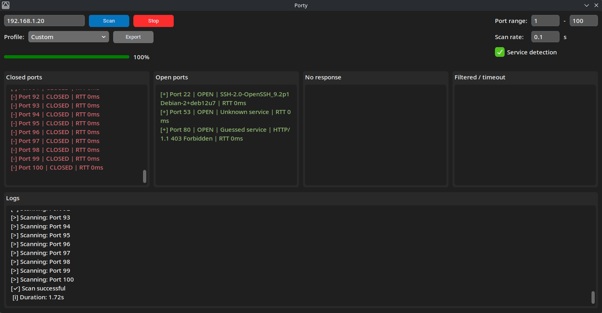

Description
Porty is a lightweight TCP port scanner written in Python. It supports fast and accurate port scanning with features such as banner grabbing, active service probing as a fallback and TCP RTT measurement.
❗Disclaimer❗
This software is provided for educational and research purposes only. Use it only on systems you own or have permission to test. The author is not responsible for any misuse or damage caused by this application!

Features
- TCP port scanning
- Service detection (Passive banner grabbing + active service probing)
- TCP RTT (round-trip time) measurement
- Open / Closed / No response / Filtered classification
- Adjustable scan rate
If you run into any bugs or issues, feel free to message me anytime!
App and webpage are under 3.0 GPL licence. More on gnu.org
Setup
Windows
- Download the latest .zip
- Extract it anywhere you like
- Run the application
Linux
- Download latest .AppImage
- Make it executable (chmod +x Porty-x86_64.AppImage)
- Run the application (./Porty-x86_64.AppImage)